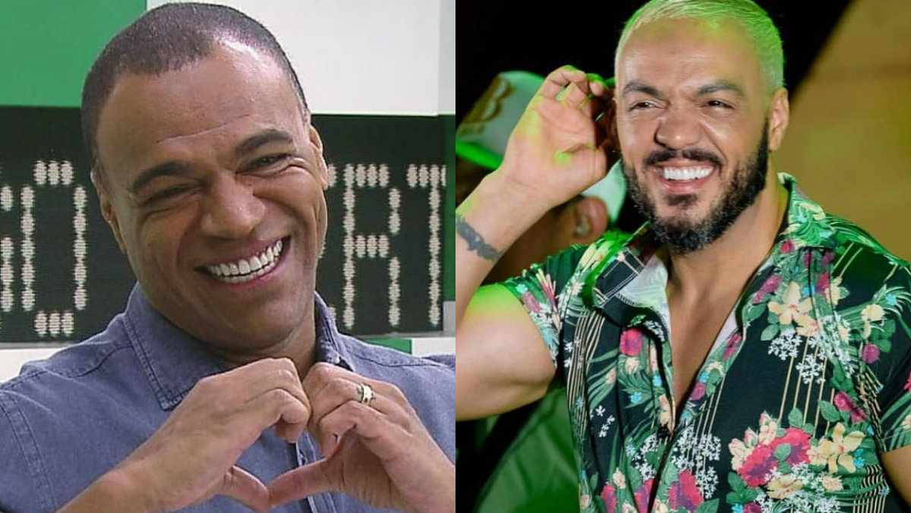

Se a geração de sambistas cariocas aglutinados em torno do grupo Fundo de Quintal propôs uma nova forma de tocar samba ao longo dos anos 1980, em revolução antecipada por Beth Carvalho (1946 – 2019) no álbum De pé no chão (1978), a turma do pagode paulista apresentou na década de 1990 uma nova forma de cantar samba. Nessa geração, sobressai o nome de Marcelo Pires Vieira, o cantor conhecido como Belo.
A história do nosso cantor favorito
Belo teve no início de sua carreira a participação do Grupo Beira Rio do Campanário em Diadema em 1992, na época apenas como cavaquinista. Belo foi cavaquinista em vários grupos paulista e fez abertura de shows para vários grupos: Arte Final, Reinaldo, Art Popular, J.B. Samba, entre outros. A partir de 1993, a convite de um amigo de infância, Robson Buiú, integrou o grupo Soweto, do bairro de Itaquera, com o qual foi, a princípio cavaquinista, e posteriormente, vocalista. Juntamente com o grupo Belo gravou três discos e realizou shows pelo Brasil e exterior.
Em 1994, por um selo independente o grupo lançou o CD “Ventos areais”. Em 1997, contratados pela EMI Music, gravaram o CD “Refém do Coração”, que chegou a vender mais de um milhão de cópias, lançando nacionalmente o grupo. Belo também participou de gravações com outros artistas, como Ivete Sangalo e Neguinho da Beija-Flor. Com este, gravou o sucesso “Ângela”, cuja regravação vendeu 500 mil cópias em todo o país.
Em 1999, a presidência da Escola de Samba Beija-Flor convidou-o a puxar o samba-enredo da escola ao lado de Neguinho da Beija-Flor. No mesmo ano, o disco que lançou com o Soweto, “Farol das estrelas”, vendeu um milhão e meio de cópias.
Em 2000, o conjunto saiu em turnê por Portugal e África, mas logo o cantor deixou o grupo e no mesmo ano, lançou seu primeiro trabalho solo, o CD “Desafio”, pela gravadora EMI. A música "Tua boca" foi tema da novela "O Cravo e a Rosa", da Rede Globo; "Desafio", outro sucesso do disco, destacou-se nas rádios. O disco vendeu mais de um milhão de cópias, ganhando o "Disco de Diamante".
Vida Pessoal
De 1991 a 1997 foi casado com Elisa Silva, com quem teve 4 filhos: Ingrid, Arthur, Paula e Isadora. Em 1998 casou-se com Viviane Araújo, de quem se separou em 2007, após nove anos de união. Nesse mesmo ano começou a namorar Gracyanne Barbosa, e foi morar junto em poucos meses juntos. Casaram-se civilmente em 2011, e religiosamente em 2012.
Caso Denilson
Em 1999, o ex-jogador Denílson comprou os direitos do grupo Soweto, no qual Belo era vocalista. Em 2000, o cantor decidiu sair do grupo e seguir carreira solo, Denilson então o processou acusando-o se quebra de contrato, passando a cobrar a dívida judicialmente. Contudo, Belo o processou por tê-lo chamado de caloteiro e o exposto publicamente, mas teve o pedido negado pela Justiça e determinado que ele pagasse a dívida para o ex-jogador.
Em 2004, a defesa de Belo informou à Justiça que o cantor jamais reconheceu Denílson como "dono do Soweto" e argumentou que Belo não recebeu qualquer aporte financeiro de Denílson no período do grupo, entretanto, o Tribunal de Justiça entendeu que Belo descumpriu acordo e deu vitória a Denílson, determinando que o cantor pagasse R$ 388 mil na época, valor que nos dias atuais supera os R$ 7 milhões.
Em 12/07/2023, os veículos de comunicação noticiaram que o cantor Belo, teria quitado a dívida, que já superava R$ 7 milhões, com Denílson, no entanto, o ex-jogador informou que a dívida ainda não estava 100% acertada, isso porque o cantor teria assinado um acordo para realizar o pagamento de forma parcelada.
Retorno do Soweto
Durante participacao no programa Domingão do Huck, da Globo, Belo confirmou a volta de uma relação que os admiradores do cantor esperaram por muito tempo. Em celebração aos 30 anos de carreira, o artista revelou que vai sair em turnê com os amigos do Soweto, seu ex-grupo musical. “Eu tinha que fazer essa comemoração”, disse o cantor no programa, animando o público.
A reunião era esperada pelo público desde o pagamento da dívida que Belo tinha com o ex-jogador e campeão mundial pelo Brasil, Denilson.
Então é isso! Esperamos que você tenha gostado do nosso artigo sobre o maior cantor de pagode dos anos 90!